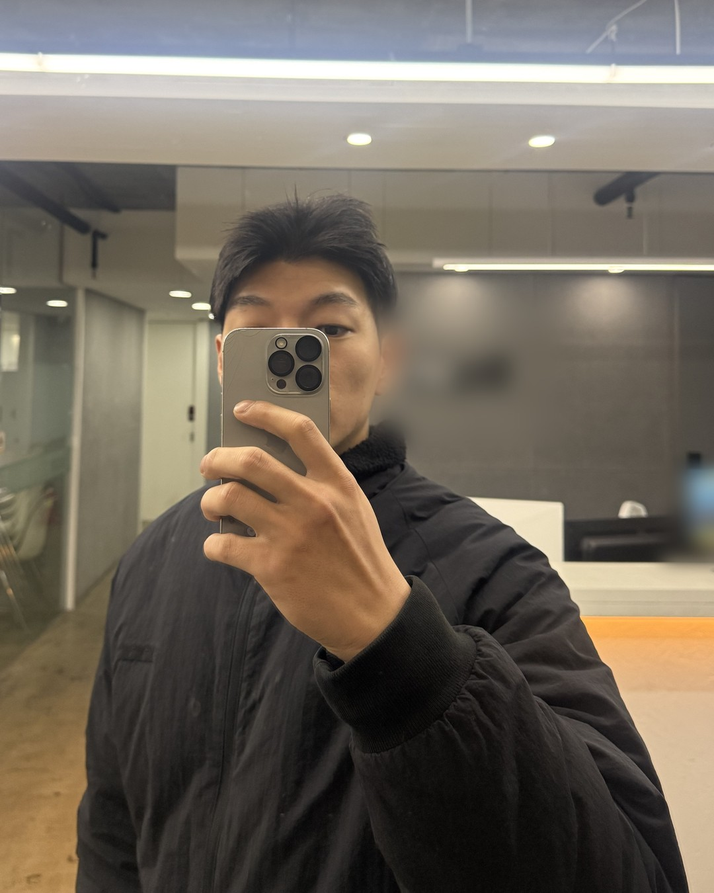
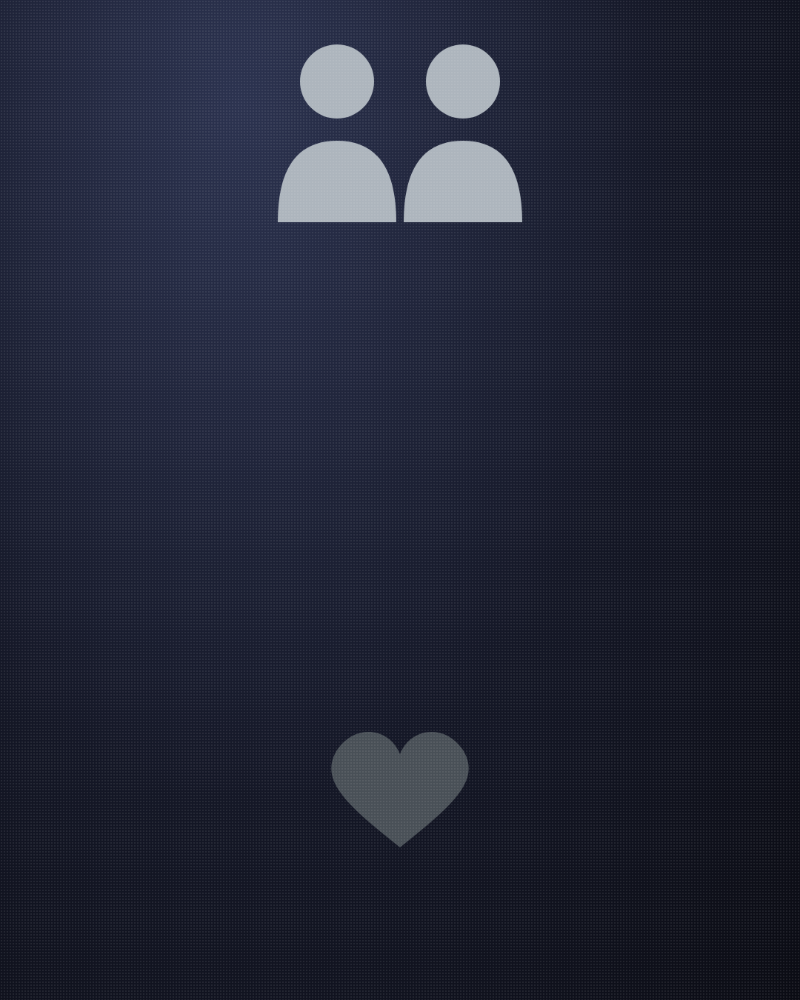
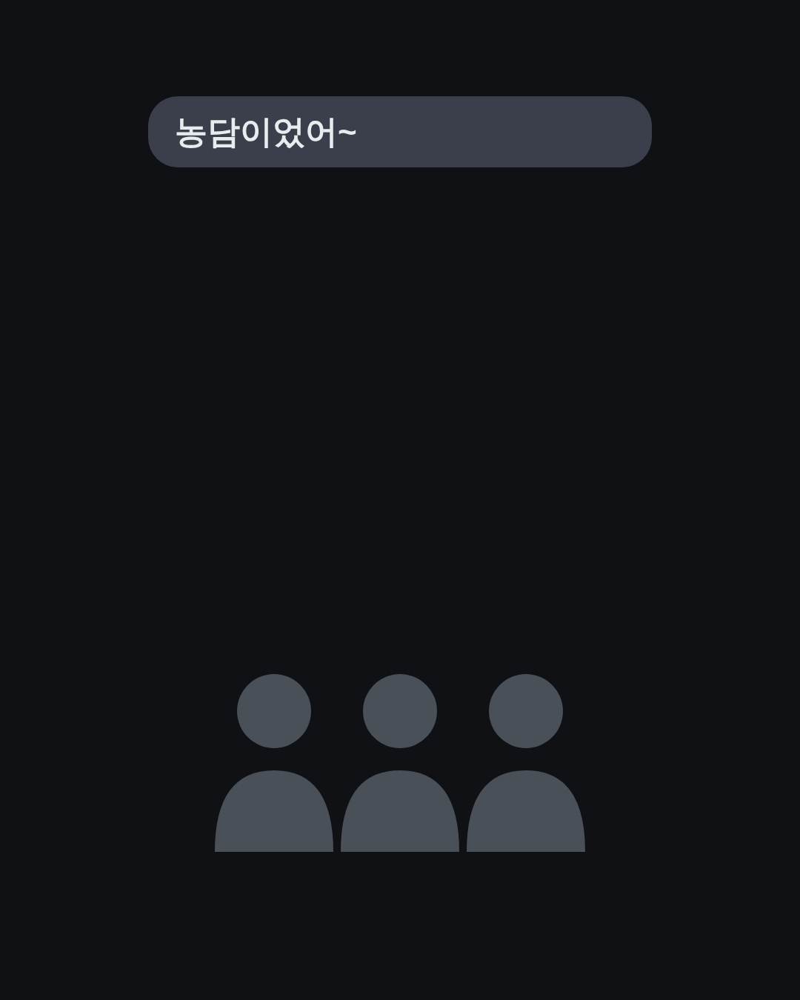
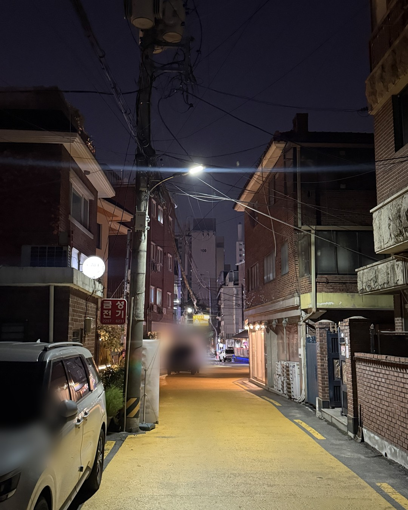
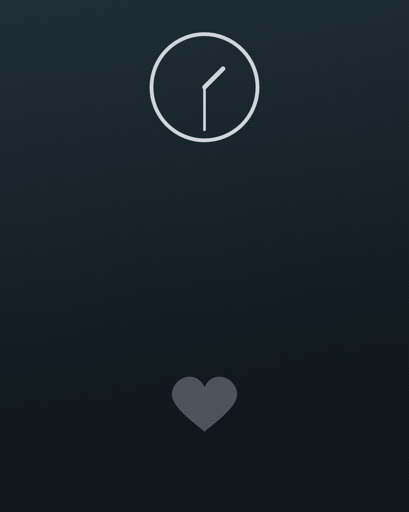
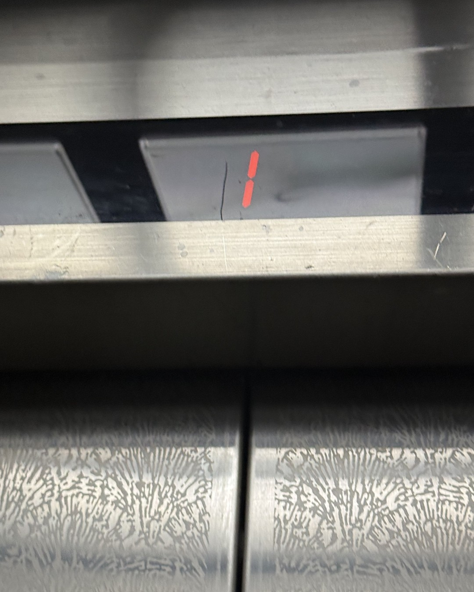
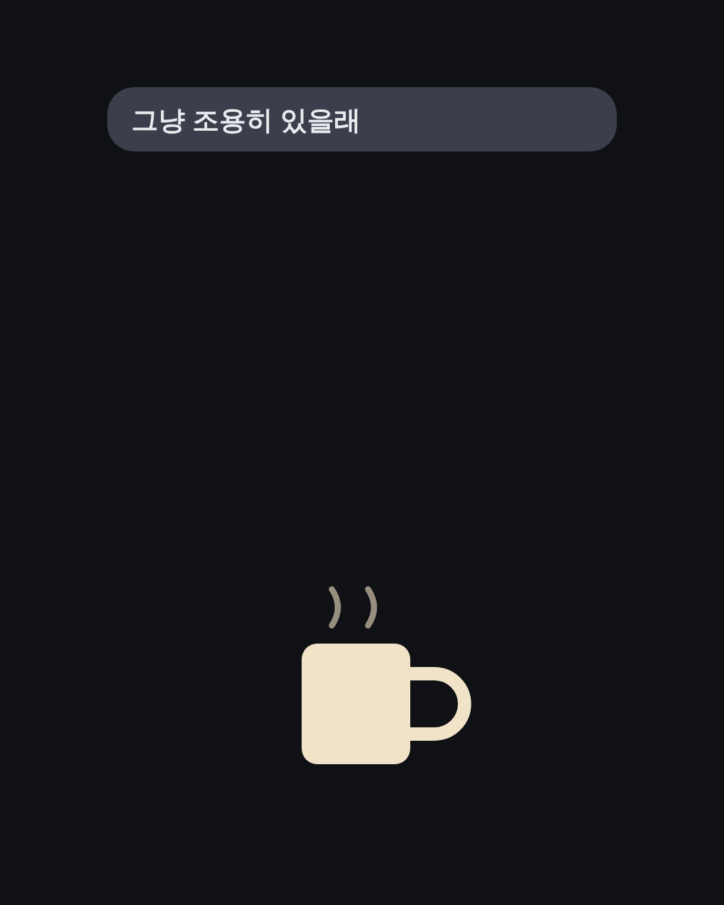
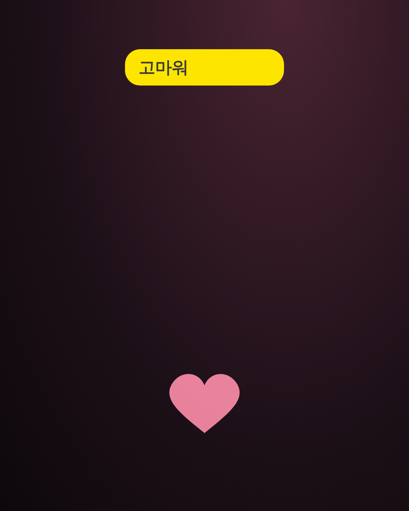
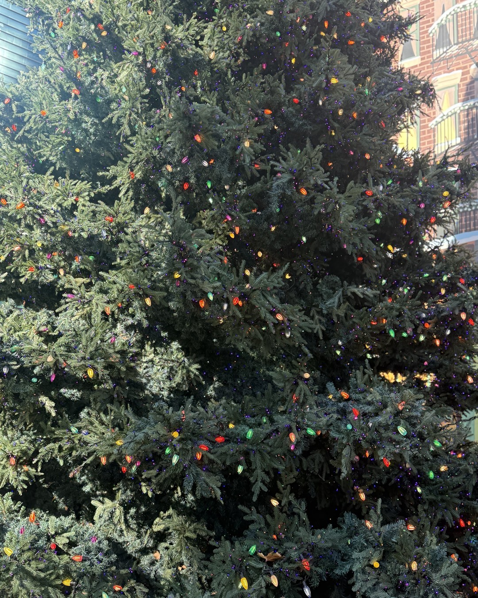
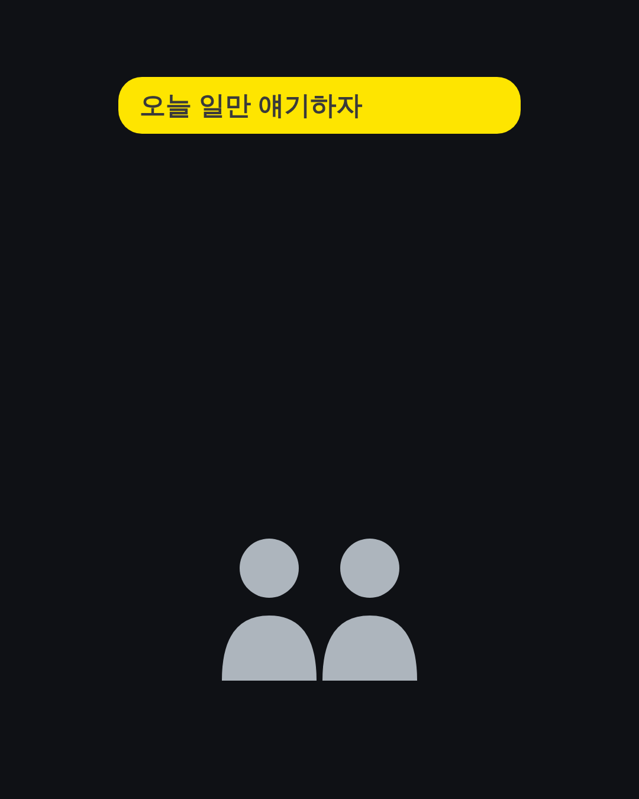

남자가 말없이
떠날 준비를 하게 만드는 법
(다섯 가지만 하면 돼요.)
1/14
@mszexc
넘겨보세요 →

남자는 헤어지자는 말보다
조용히 마음을 정리하는 쪽을 골라요.
(그래서 여자는 제일 늦게 알아요.)
2/14
@mszexc
남자들끼리 하는 말 #61
첫 번째.
고마운 일엔 아무 말도 하지 마세요.
(원래 해야 하는 일이잖아요.)
3/14
@mszexc
남자들끼리 하는 말 #61

두 번째.
그의 친구들 앞에서 그를 깎아내리세요.
(농담이었다고 하면 돼요.)
4/14
@mszexc
남자들끼리 하는 말 #61

세 번째.
싸울 때마다 지난 일을 다시 꺼내세요.
(끝난 싸움은 없으니까요.)
5/14
@mszexc
남자들끼리 하는 말 #61

네 번째.
그가 좋아하는 건 시간 낭비라고 하세요.
(취미보다 내가 먼저잖아요.)
6/14
@mszexc
남자들끼리 하는 말 #61

다섯 번째.
"됐어, 말하기 싫어"로 대화를 끝내세요.
(알아서 눈치채겠죠.)
7/14
@mszexc
남자들끼리 하는 말 #61

남자들끼리는 이렇게 말해요.
"이제 싸우는 것도 지쳐. 그냥 조용히 있어."
(이 말이 나오면, 정리가 시작된 거예요.)
8/14
@mszexc
남자들끼리 하는 말 #61
그리고 남자는
떠나기로 정하면 오히려 착해져요.
(더 이상 싸울 이유가 없으니까요.)
9/14
@mszexc
남자들끼리 하는 말 #61

반대로 남자가 남는 연애는
작은 일에 "고마워"가 오가요.
(남자는 인정받는 곳에 오래 머물러요.)
10/14
@mszexc
남자들끼리 하는 말 #61

오늘 하나만 바꿔 보세요.
"오늘 데리러 와줘서 고마워."
(당연한 일에 고맙다는 말, 남자는 오래 기억해요.)
11/14
@mszexc
남자들끼리 하는 말 #61

싸울 땐 이렇게.
"오늘 일만 얘기하자."
(지난 일을 꺼내지 않는 게, 남자를 지치지 않게 해요.)
12/14
@mszexc
남자들끼리 하는 말 #61
남자가 말없이 떠나는 건
하루가 아니라, 쌓인 날들 때문이에요.
13/14
@mszexc
남자들끼리 하는 말 #61
이것만 기억하세요.
남자는 싸워서 떠나는 게 아니라, 지쳐서 떠나요.
남자가 하는 말의 뜻은 전자책 1·2권에 · 프로필 링크에서 무료로 받아보세요
14/14
@mszexc
남자들끼리 하는 말 #61